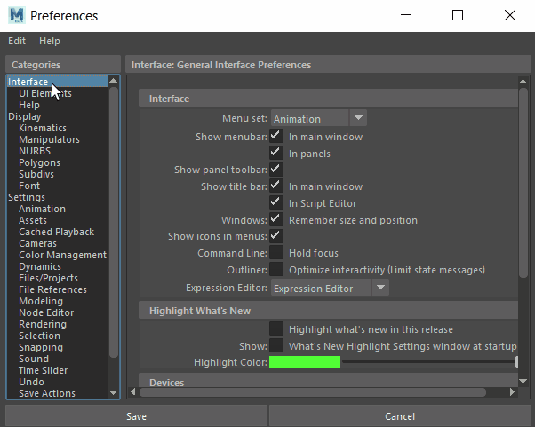
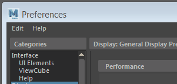

在“首选项”(Preferences)窗口中，可以为按不同类别组织的多个 Maya 功能元素设置首选项。

打开“首选项”(Preferences)窗口，然后单击左侧的类别以显示相关设置。
也可以单击 Maya 窗口右下角的“动画首选项”(Animation Preferences)图标  。这将打开“首选项”(Preferences)窗口，显示“时间滑块”(Time Slider)类别，但您随后可以选择所需的任何类别。
。这将打开“首选项”(Preferences)窗口，显示“时间滑块”(Time Slider)类别，但您随后可以选择所需的任何类别。
还原“首选项”(Preferences)设置
Maya 首选项文件夹的默认位置：
- Windows：<驱动器>:\Documents\maya\<版本>
- macOS：/Users/<用户名>/Library/Preferences/Autodesk/maya/<版本>
注： 默认情况下，/Users/<用户名>/Library/ 文件夹处于隐藏状态。若要在 Finder 中切换隐藏文件夹的可见性，请按 Command + Shift + .（句点）。
- Linux：/home/<用户名>/maya/<版本>
若要返回到“首选项”(Preferences)窗口中保存的最后设置，请在其中选择。
要恢复为出厂默认设置（重置），请从菜单栏中选择（在“类别”(Categories)部分上方）。

重要： 还原默认设置将重置“首选项”(Preferences)窗口中每个类别的首选项。
若要完全重置所有 Maya 首选项（这有助于解决界面问题），请参见重置 Maya 首选项。